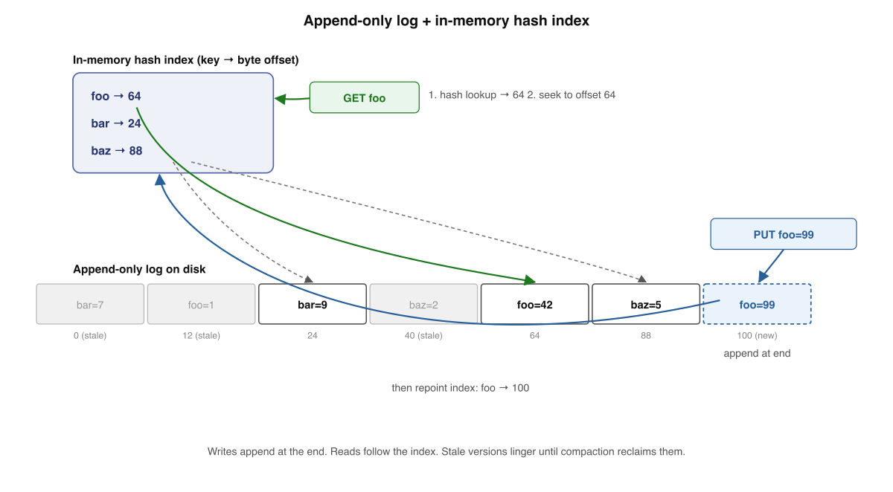
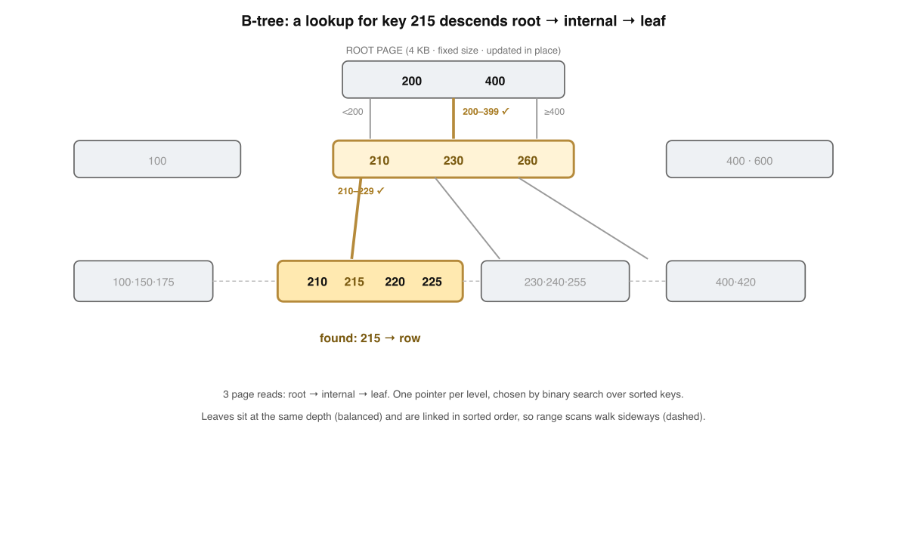
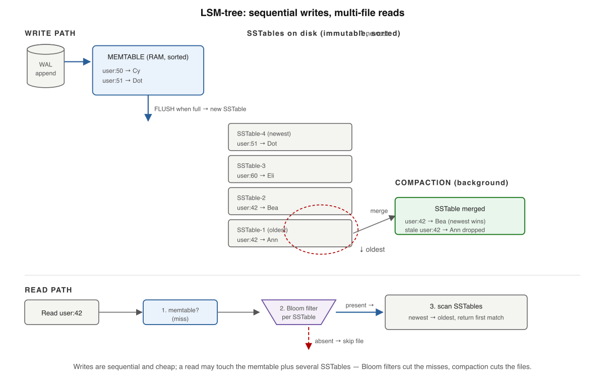
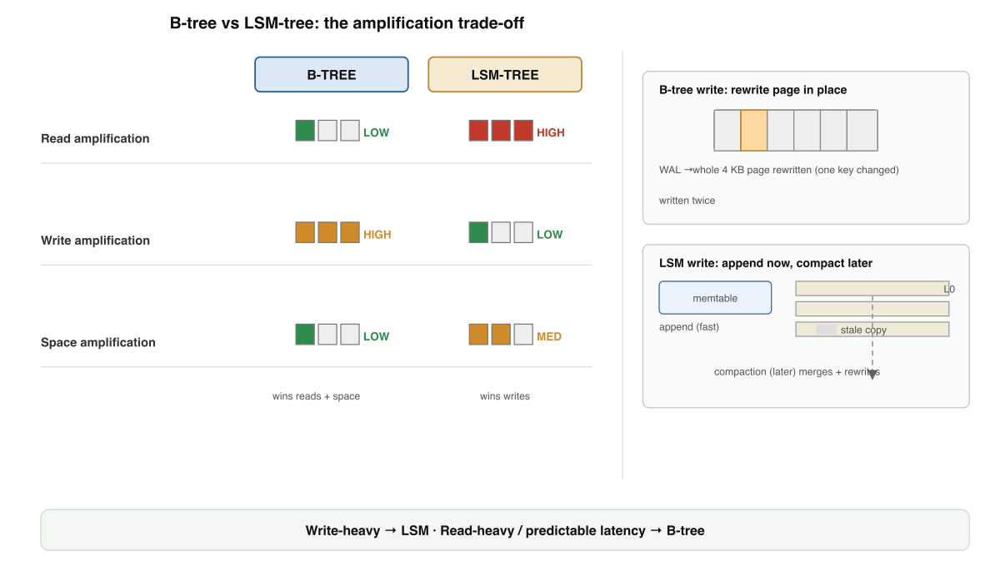
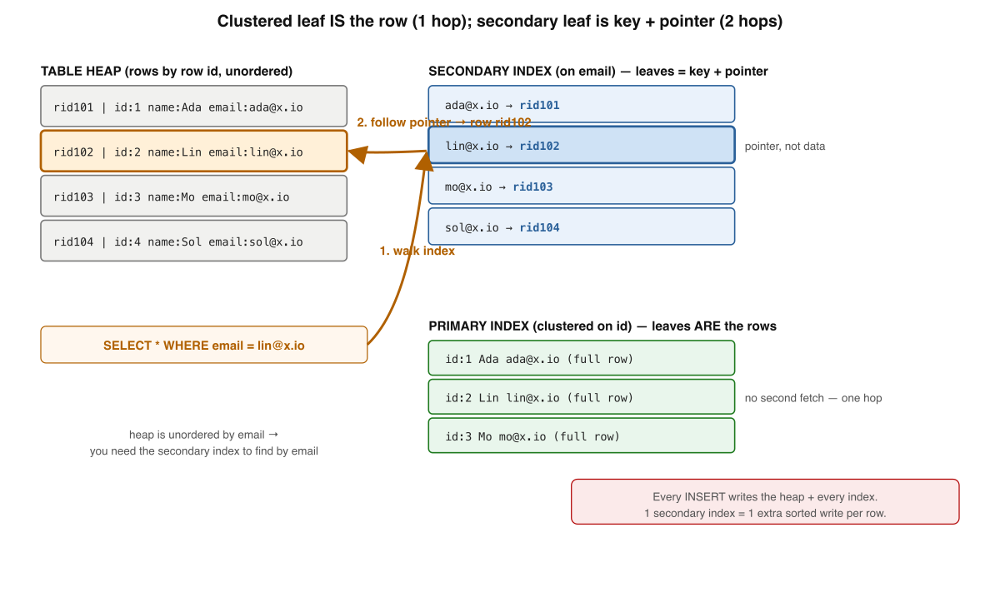
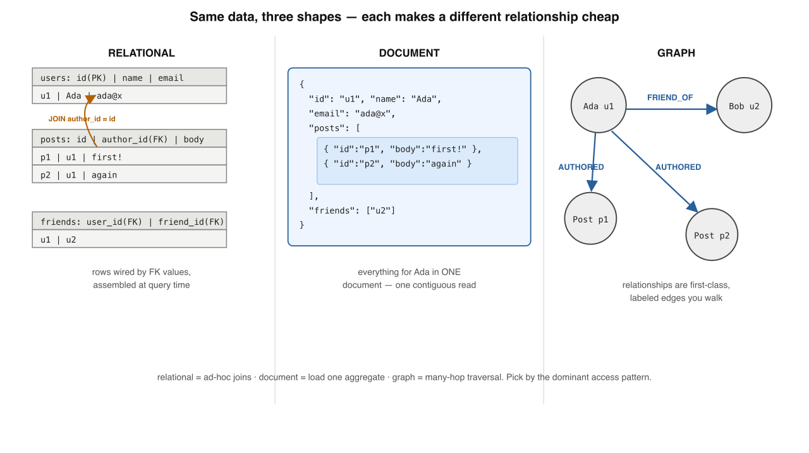
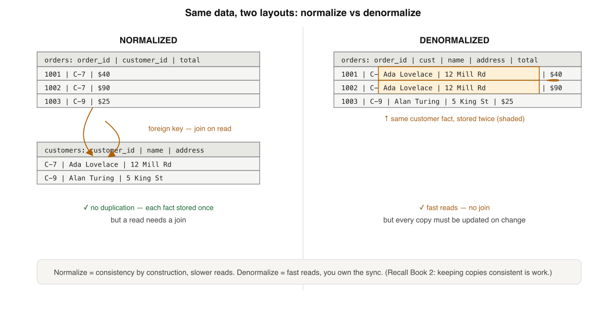
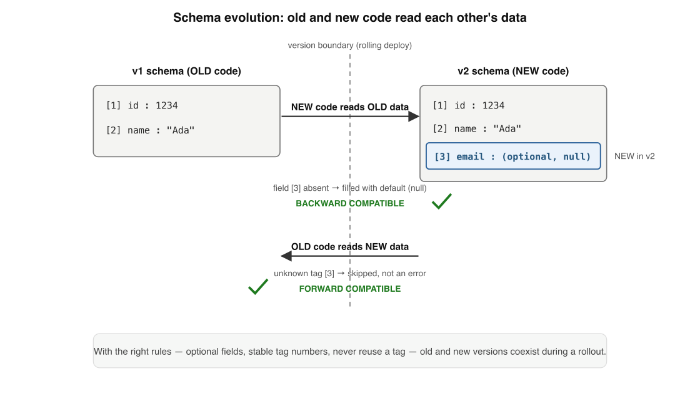
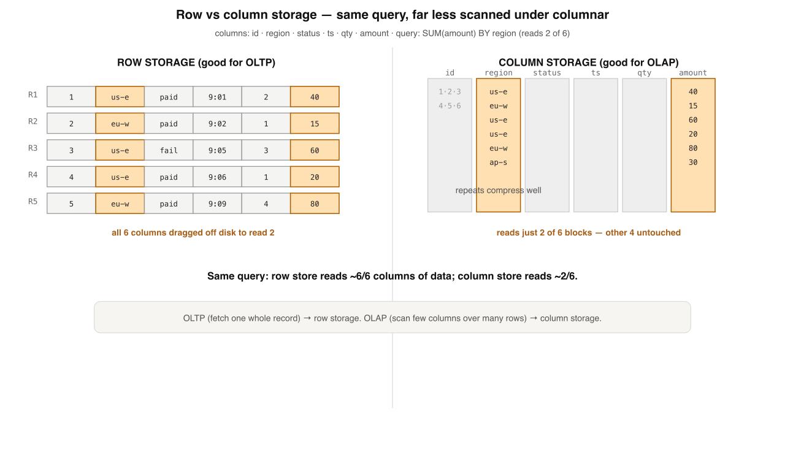

Book 3 · The layer below your queries · visual edition
Storage Engines from first principles
~40 min · 9 levels · real engines + interview questions · interactive recall · grounded in DDIA ch.2–4
Your bar: redraw — from memory — how a database puts bytes on disk and finds them again, so you can
choose engines, indexes, and data models with judgment instead of cargo-culting. Every level is built to be
seen and redrawn. Grounded in Kleppmann's Designing Data-Intensive Applications1 and the primary papers behind each engine.
One tension holds the whole book. Each level just moves you along its curve:
A storage engine is a log you writeplus an index you readtrading read / write / spaceto fit one access pattern
Memorise this triangle. Every level below is one engine, index, or layout choosing a corner — and paying in the other two.
1
Log + hash index — the simplest real engine
Two lines of bash become a durable database — and reveal the tension that governs every index you'll ever choose.
Bitcask (Riak's engine): append the data, keep key → offset in RAM. Reads do one lookup + one seek regardless of file size.6

The same idea from the book: writes stream to the tail; the hash map turns "search the data" into "consult a small structure, then seek."
Is An append-only log of key,value records + an in-RAM map from each key to its latest byte offset.
Why it exists Appends are the fastest write a disk offers — one position, then stream. The index converts a scan into a seek.
Compaction Segments close at a size cap, become immutable, and a background merge keeps only the latest value per key.
Like (code) A SELECT … LIMIT 1 over a tail-appended file, but the offset is precomputed in a hash map.
✗ "An append-only log keeps every dead version forever"
✓ Compaction rewrites a fresh segment, swaps it atomically, deletes the old — crash-safe by immutability
📜 Memory rule: A storage engine is a log you write fast and an index you read fast — and every index you add taxes every write.
Memory check
Why is db_set fast but db_get slow without an index? → append vs full linear scan
What does Bitcask's hash map store? → key → byte offset of latest record
Why can compaction run without blocking reads? → new segment swapped in atomically; old stays immutable
2
B-tree — the read-optimized default
The structure behind every CREATE INDEX since 1972: a shallow, sorted, page-oriented tree you update in place.

Lookup of key 215: root [200,400] → internal [210,230,260] → leaf. Three page reads, each a binary search in memory.Branching factor ~hundreds → depth ~4 levels addresses billions of keys. Writes overwrite a page in place; the WAL makes that crash-safe.2
Is A balanced tree of fixed-size pages (4–8 KB); each node is sorted keys + child pointers; all leaves at equal depth.
Why it exists A high branching factor keeps the tree shallow, so a point lookup is O(log n) pages — and range scans walk the sorted leaves.
Update-in-place One canonical location per key; a write overwrites the leaf page. A full leaf splits and pushes a separator up.
Crash safety Overwriting a page isn't atomic, so the WAL records intent first; recovery replays it.1
✗ "More keys = a much deeper, slower tree"
✓ Depth grows logarithmically — fan-out ~256 means 4 levels hold ~4 billion keys
🌳 Memory rule: A B-tree is sorted pages updated in place — cheap predictable reads, paid for with random write I/O and WAL.
Memory check
What keeps a B-tree lookup to a few reads at a billion rows? → high branching factor → shallow tree
What happens when a leaf has no room? → split in two, push a separator to the parent
Why does a B-tree need a WAL? → in-place page overwrite isn't crash-atomic
3
LSM-tree — write-optimized, log all the way down
Turn every write into a sequential append; defer the cleanup to a background merge. The engine behind RocksDB & Cassandra.

Write → WAL + memtable; flush a full memtable as a new immutable SSTable; compaction merges runs; reads go memtable → SSTables newest-to-oldest, gated by Bloom filters.3Without filters an absent-key read touches every SSTable. A ~1%-FPR filter costs ~10 bits/key and turns that into one rare false-positive open.
Memtable In-RAM sorted map (skip list / RB-tree) that buffers writes; a WAL alongside makes it crash-safe.
SSTable Immutable on-disk file sorted by key — never modified, only merged away. Two sorted files merge in one linear pass.
Updates & deletes are writes too An update appends a newer entry; a delete appends a tombstone. Old values are shadowed, not erased.
Compaction Merges runs, keeps the newest value per key, drops tombstoned keys — reclaiming space. Leveled vs size-tiered is a tunable knob.
✗ "A delete frees the space immediately"
✓ A tombstone shadows the value; space returns only when compaction reaches the oldest SSTable (Cassandra: gc_grace_seconds)
🪵 Memory rule: An LSM-tree buffers in RAM, flushes immutable sorted runs, and merges later — sequential writes now, read & merge work deferred.
Memory check
Why are LSM writes fast? → append to WAL + insert into in-RAM memtable; no in-place disk write
A read returns "not found" but old SSTables have a value — why? → a newer tombstone shadows them
What guarantee does a Bloom filter give? → "definitely absent" is never wrong → safe to skip
4
Amplification — the three currencies you trade
Read, write, space: a logical op costing more than one physical op. You can't drive all three to zero — pick a corner.

The amplification grid from the book: where each engine spends, where each saves. B-tree pays write; LSM pays read & space-until-compacted.1
Axis
B-tree
LSM-tree
Read amp
low — bounded by tree height
medium–high — may probe many runs
Write amp
medium–high — in-place, random, WAL + page
low now — deferred into compaction
Space amp
low — one copy, page slack
medium — stale versions until compacted
Write I/O
random
sequential
Latency
predictable
spiky (compaction stalls)
Read amp Pages touched per logical read. B-tree ≈ 1 uncached (the leaf); LSM grows with the number of sorted runs.
Write amp Bytes written per byte of user data. B-tree: WAL + whole-page rewrite + splits. LSM: defers & batches into big sequential rewrites.
Space amp Disk used vs logical data. B-tree: page slack (~60–70% full). LSM: stale versions + tombstones, often offset by compression.
✓ They defer and batch it into compaction — a key may be rewritten across several levels over its life
⚖️ Memory rule: Read, write, space — every engine picks one corner of the triangle and pays in the other two. The skill is reading the workload.
Memory check
Why is an LSM point lookup sometimes slower than a B-tree's? → key may live in any of several sorted runs
Why does a tiny B-tree update still amplify writes? → rewrites a whole page + a WAL record
Where does LSM space amp come from? → stale versions + tombstones held until compaction
5
Indexes — clustered vs secondary, and the write tax
One set of rows, many access paths. Every secondary index is pure redundancy you build, pay for, and keep in sync.

Clustered (InnoDB): the row lives in the PK leaf, secondaries store the PK. Heap (Postgres): rows in a heap, every index holds a ctid pointer.Put the equality column first, the range column second — a range on the leading column "uses up" the sort order and forces a scan.2
Clustered The PK B-tree leaf is the row (InnoDB). A secondary stores the PK value → secondary lookup walks two trees.
Heap Rows sit unordered in a heap; every index leaf holds a ctid pointer (Postgres). PK lookup = index walk + heap fetch.
Composite Keyed on several columns, sorted lexicographically. Usable only for a left-anchored prefix (leftmost-prefix rule).
Covering Holds every column the query reads, so the answer comes from the index alone — no row fetch.
✗ "Add indexes freely — they only make queries faster"
✓ A table with 8 indexes turns 1 logical insert into 9 physical writes; each index is a standing write tax
🔎 Memory rule: An index makes reads it covers faster and every write that maintains it slower — index what you actually filter and sort by, and measure with EXPLAIN.
Memory check
What does an InnoDB secondary index store in its leaf? → the indexed value + the primary key
Which query can't use (account_id, created_at)? → one filtering only on created_at
Why does each secondary index slow writes? → every write must place/move the key in that index too
6
Data models — relational, document, graph
The most consequential, hardest-to-change backend decision. Each model makes a different relationship cheap.

The same user-posts-friends domain modeled three ways: relational tables joined by value, one embedded document, a property graph of traversable edges.4"Friends-of-friends-of-friends" is a 3-table self-join (relational) but a 3-hop pointer walk (graph) — same data, opposite cost.
Relational Rows relate by value (foreign key); a join assembles them at query time. No duplication, referential integrity, ad-hoc queries.
Document One self-contained JSON/BSON tree embedding related data — great locality, eases the object-relational impedance mismatch.
Graph Nodes + labeled directed edges; an edge is a traversable pointer (index-free adjacency), so a hop is O(local fan-out), not a fresh search.
Convergence Postgres jsonb stores an indexable document in a relational row — the choice is increasingly per-field.
✗ "Documents are modern / graphs are cool, so default to them"
✓ Each model is a locality bet; relational stays the safe default when access patterns are unknown (Codd separated logical from physical)
🗂️ Memory rule: Pick the model whose cheap operation is what your app reads and traverses most — not the trendiest one.
Memory check
How does relational relate two rows? → by value — a FK matching another table's PK
Why is embedding posts in a user doc fast to read? → one contiguous fetch returns the whole aggregate
Why is a graph good at deep traversals? → each hop follows a stored edge, not a fresh index lookup
7
Normalization vs denormalization — where each fact lives
Store a fact once and the database protects it. Copy it for speed and you inherit the job of keeping every copy honest.

Normalized: customer stored once, joined on read. Denormalized: customer copied into every order — single-row reads, but a change fans out.Denormalization doesn't remove the consistency problem — it moves it into your application and transactions (or a materialized view).
Normalized
Denormalized
Each fact
stored once
stored many times
Read "order + customer"
join
single row
Address change
one update
fan-out update
Owns consistency
the database
you (or a materialized view)
Normalization Each independent fact in exactly one row; everything else references by key. Consistency by construction (1NF→2NF→3NF).
Denormalization Deliberately copy a fact into the rows that read it — join-free reads, paid for with fan-out write sync.
Schema-on-write Relational: columns/types/constraints validated on the way in.
Schema-on-read Document/lake: bytes written as-is, structure interpreted by the reading code — the schema just lives in that code.
✗ "Schema-on-read means schemaless"
✓ The schema still exists — it's implicit in the reader and can silently drift between versions
📐 Memory rule: Start normalized (correct by construction); denormalize specifically, against a measured read pattern, knowing exactly which invariant you just took ownership of.
Memory check
What does normalization eliminate? → redundant copies of a fact that drift out of sync
Copy customer_name into orders — which invariant do you now own? → every copy must update when the customer changes
What decides normalize vs denormalize? → read/write ratio, access pattern, consistency tolerance
8
Encoding & evolution — bytes that outlive their writer
An in-memory object is a graph of pointers meaningful only in one process. To store or send it, you flatten it — and then change its shape for years without breaking old readers.

The two crossing arrows: backward (new code reads old data) and forward (old code reads new data) compatibility — what makes rolling deploys safe.5Protobuf/Thrift identify fields by integer tag; Avro carries no per-field id and resolves writer-vs-reader schemas by name.
Field names in bytes
Size
Needs schema to read
JSON / XML
yes, every record
larger
no
Protobuf / Thrift
no — tag numbers
smaller
yes
Avro
no identifiers at all
smallest
yes (writer + reader)
Encoding Flatten a pointer-laced object graph into a self-contained byte sequence; decoding rebuilds it in a possibly different process, months later.
Text vs binary JSON ships field names + decimal text (readable, schema-free). Protobuf/Avro ship tagged values (compact, fast, need a schema).
Backward compat Newer code reads older data — new fields are absent, filled by default.
Forward compat Older code reads newer data — it skips the unknown tag and parses the rest. This is why rolling deploys are safe.
✗ "A new required field is fine if the schema declares it"
✓ The moment one producer omits it, every old consumer breaks — proto3 removed required for exactly this
🔁 Memory rule: Encoding choices at write time constrain every reader for the data's lifetime — which far outlives any one service version. Keep both directions compatible.
Memory check
Why can't you dump raw in-memory bytes to disk? → pointers are addresses valid only in the writer's process
Why does old code survive a message from new code? → it skips the unknown tagged field
Which rule silently corrupts reads if broken? → reusing a retired tag number
9
Row vs column — match the layout to the workload
The capstone. OLTP wants whole rows by key; OLAP scans millions of rows but a handful of columns. The bytes reorganize entirely.

Row store: all of a row's cells adjacent — perfect for "fetch order #4821". Column store: all values of one column adjacent — scan reads only the columns named.7Two compounding wins for columnar: read only the columns named, and compress same-domain runs hard. The i-th value in every column file is the same row.
OLTP
OLAP
Read pattern
few rows, by key
millions of rows, scan
Columns touched
all (whole record)
2–5 of many
Write pattern
random inserts/updates
bulk load / append
Bottleneck
seek latency
scan bandwidth
Layout
row store (B-tree / LSM)
column store (Parquet, Vertica)
Row store All of a row's values adjacent. The unit you store together is the unit you retrieve together — ideal OLTP locality.
Column store All values of one column adjacent in its own block; a scan reads only the columns it names, bounded by columns-touched not table-width.
Compression A column is one type from one domain → run-length / dictionary / bitmap encoding compress far harder than a heterogeneous row.
Star schema Warehouses ETL into a column store: a narrow central fact table (one row per event) + small dimension tables radiating out.
✗ "There's one best storage engine"
✓ Only an engine that fits an access pattern — the same logical table can (and at scale should) live in both a row and a column store
🏛️ Memory rule: Match the storage layout to the workload — many small key reads → row; few wide scans → column. The senior skill is reading the workload, not memorizing engines.
Memory check
What distinguishes OLAP from OLTP? → scans many rows but reads few columns
Two reasons columnar scans are fast? → read only needed columns + compress same-domain values
What does a star-schema fact table hold? → one row per event, FKs out to dimension tables
Where each layer shows up — real engines
Grounding for your judgment: the concept, a concrete engine that embodies it, and the shape the trade-off usually takes.
Concept
Real engine / feature
The trade-off it makes
Log + hash index
Bitcask (Riak)
blazing reads, keyset must fit RAM
B-tree
PostgreSQL btree · InnoDB clustered PK
low read amp, random write I/O
LSM-tree
RocksDB · Cassandra · ScyllaDB
cheap sequential writes, read & compaction cost
Amplification knob
RocksDB leveled vs universal compaction
trade write amp against space amp explicitly
Clustered vs heap
InnoDB (PK leaf = row) vs Postgres (heap + ctid)
two-tree secondary vs heap pointer chase
Document model
MongoDB (16 MB doc cap forces subset pattern)
locality vs unbounded-array bloat
Materialized view
Postgres MATERIALIZED VIEW (manual refresh)
denormalized read speed vs staleness
Encoding / evolution
Protocol Buffers · Avro · Parquet footer
compactness vs human-readability + compat rules
Column store
Vertica (C-Store) · Parquet (Dremel) · Citus columnar
fast analytic scans, expensive single-row writes
Pattern to notice: most "B-tree vs LSM" debates are really amplification debates, and most engines now ship both modes (MyRocks, WiredTiger). Reason about the axes, not the data-structure name.1
Q1. What does a Bitcask-style hash index actually map?
Q2. Why does a B-tree need a write-ahead log?
Q3. A read returns "not found", yet older SSTables hold a value. Why?
Q4. Which query can an index on (account_id, created_at) NOT serve efficiently?
Q5. You copy customer_name into every order row. Which invariant do you now own?
Q6. Why does column-oriented storage make analytic scans faster?
Reconstruct the engine from a blank page
Write the nine levels in order, one line each, with nothing on screen. Then reveal and compare — gaps are your next drill.
1 Log + hash index: append data, map key→offset · 2 B-tree: sorted pages, update in place, WAL · 3 LSM: memtable→SSTable→compaction, tombstones, Bloom ·
4 Amplification: read/write/space triangle, pick a corner · 5 Indexes: clustered vs heap, composite prefix, covering, write tax ·
6 Data models: relational/document/graph by access pattern · 7 Normalize vs denormalize: where each fact lives ·
8 Encoding: flatten objects; backward + forward compat · 9 Row vs column: match layout to OLTP vs OLAP.
I'm your teacher — ask me anything. Say "grill me on storage engines" for mixed
no-clue questions, or drop a real workload and I'll place it on the read↔write amplification and row↔column axes with you. Want a worked
EXPLAIN walkthrough or the next book (Streaming & Event-Driven)? Just ask.
Interview — pick your bar
Answer out loud in ~60s, then reveal. Core = recall · Senior = trade-offs & failure modes · Staff = synthesis under ambiguity · System Design = open design round (a different axis, not a harder level).
Walk me through what a storage engine does to turn "find me row 42" into disk I/O.
Hit these points: the engine consults an index to convert a scan into a seek → the mechanism depends on the engine: a B-tree walk root→leaf, a hash-map lookup to a byte offset, or memtable-then-SSTables for an LSM → without an index a read is a linear scan whose cost grows with data size → the unit of I/O is the page (~4–8 KB), not the row, so the engine reads whole pages and the index is a small structure kept off to the side → the punchline: every index turns "search the data" into "consult a structure, then seek."
What is a clustered index versus a secondary index, and where does the row actually live?
Hit these points: a clustered index stores the full row in the index leaf, ordered by the key — InnoDB clusters on the primary key, so the table is the PK B-tree → a secondary index is a separate structure keyed on another column whose leaf holds only the key plus a pointer back to the row → that pointer differs by engine: InnoDB stores the primary key (so a secondary lookup walks two B-trees, secondary→PK→clustered), Postgres uses a heap and every index holds a ctid heap pointer → consequence: a wide PK bloats every secondary index in a clustered engine → a secondary index is pure redundancy you build, pay for on every write, and keep in sync.
What is a composite index on (a, b), and which queries can use it?
Hit these points: it stores entries sorted lexicographically by a then b → so it serves any left-anchored prefix: a=… and a=… AND b=… → it does not serve b=… alone, because there is no left-anchored prefix to seek on → rule of thumb: put the equality column first and the range column second, since a range on the leading column "uses up" the sort order for everything after it → verify with EXPLAIN rather than guessing what the planner picks.
What is a write-ahead log (WAL), and why does a B-tree need one?
Hit these points: a WAL is an append-only log of intent written and fsync'd before the change is applied to the data pages → a B-tree updates pages in place, and overwriting a page is not crash-atomic — a torn write mid-update (or mid-split) can corrupt the page → the WAL records the change first so recovery can replay it and reach a consistent state → it also turns many random page writes into one sequential log write for durability, and engines add full-page images / doublewrite to survive torn writes → the durability contract: a commit is acknowledged once its WAL record is on stable storage, even if the dirty page is still in memory.
A teammate says "LSM-trees are just faster than B-trees." Correct them.
Hit these points: it's not "faster," it's a different corner of the amplification triangle → an LSM has low write amp now (sequential appends, work deferred into compaction) but higher read amp (a point lookup may probe many sorted runs) and space amp (stale versions and tombstones until compacted) → a B-tree has low, predictable read amp (bounded by tree height) but random write I/O plus WAL + whole-page rewrites → latency profile differs too: B-tree is predictable, LSM is spiky under compaction stalls → so the answer is "depends on the workload": ingest-heavy → LSM, read-heavy/tail-latency-sensitive OLTP → B-tree.
Define read, write, and space amplification, and explain why you can't drive all three to zero.
Hit these points:read amp = pages/files touched per logical read; write amp = bytes written to disk per byte of user data; space amp = disk bytes ÷ live data bytes → they trade off against each other: a B-tree keeps read amp ≈ 1 (the leaf) but pays write amp on every in-place page rewrite + WAL; an LSM keeps write amp low by deferring it, but pays read amp (many runs) and space amp (stale versions) until compaction runs → compaction itself converts space/read amp back into write amp — you're moving the cost, not removing it → this is the RUM conjecture: optimize any two of read/write/space and the third suffers → the skill is reading the workload and choosing which currency to spend.
An InnoDB secondary-index lookup is slow. Explain the mechanics and a fix.
Hit these points: InnoDB is clustered, so the secondary leaf stores the primary key, not a direct row pointer → a secondary lookup therefore walks two B-trees: secondary index → PK value → clustered index to fetch the row (the "bookmark lookup") → a wide PK makes this worse because it bloats every secondary index and every lookup → fix: a covering index that includes the selected columns so the query is answered from the index alone (Index Only Scan), avoiding the second walk → or narrow the PK → confirm with EXPLAIN that you actually got the covering/index-only plan.
What does the page / buffer cache do, and how does it change how you reason about read cost?
Hit these points: the buffer pool / page cache holds recently-used pages in RAM, so a "disk read" is often actually a memory hit → the real read cost is the miss rate, not the raw page count: a B-tree's upper levels stay cached, so a billion-row lookup is usually one uncached leaf read, not four disk reads → an LSM's read amp also softens once hot SSTable blocks and index/Bloom-filter blocks are cached → writes go through it too: dirty pages are buffered and flushed later, which is why durability rides on the WAL, not on the page being written → the senior framing: amplification numbers are worst-case/cold; the working-set fit in the cache is what dominates steady-state latency → watch the cache hit ratio, not just the plan.
How do you choose between a B-tree (row store) and an LSM-tree for a new service, and how would you defend reversing that choice later?
Hit these points: start from the access pattern and SLO, not the brand: write:read ratio, point vs range reads, p99 latency target, dataset vs RAM size, and storage budget → map them onto the triangle — write-heavy ingest with disk to spare → LSM (sequential writes, low write amp); read-heavy, tail-latency-sensitive OLTP → B-tree (predictable, low read amp) → name the second-order costs: LSM compaction stalls and tunable strategy vs B-tree random-write ceiling and page slack → make it reversible: hide the engine behind a repository boundary, keep the data model engine-agnostic, and define the metric that would trigger a switch (e.g. compaction can't keep up → write stalls, or p99 read latency from probing too many runs) → the staff move is committing to a default and the measured trip-wire that says you chose wrong.
"Add an index, the query's slow" — make the principal-level case for when not to add one.
Hit these points: every secondary index is redundant data you maintain on every write — it taxes write throughput, write amp, and disk, and on a clustered engine it carries the PK in every entry → so an index is a read optimization paid for by all writers, and on a write-heavy table that tax can dwarf the read it saves → before adding one, ask: is the query hot enough and selective enough to matter? would an existing composite index serve it via a left-anchored prefix? is the planner ignoring an index that already exists (stale stats, non-sargable predicate)? → alternatives: rewrite the predicate, a covering index instead of two, a different data layout, or denormalize against a measured read pattern → the principal framing: indexes aren't free reads, they're a standing write liability — justify each one against the workload and measure with EXPLAIN, don't cargo-cult.
When is a column store the right call over a row store, and what exactly are you trading?
Hit these points: the discriminator is the access pattern: row stores keep a record's columns contiguous (great for OLTP point reads/writes of whole rows), column stores keep each column contiguous (great for OLAP scans that touch few columns over many rows) → columnar wins because a scan reads only the columns it needs and homogeneous data compresses hard (run-length, dictionary, bit-packing), so you trade space amp for huge scan throughput → what you give up: single-row writes and updates are expensive (a row is scattered across column segments), so column stores favor bulk/append loads, not OLTP mutation → the synthesis: don't pick one — run OLTP on a row store and ETL into a columnar warehouse on a star schema, refreshed so analytics scans don't starve user I/O → justify each side by its access pattern and the amplification it spends.
Design-round framework — drive any storage-engine prompt through these, out loud:
Clarify the workload: write:read ratio, point vs range reads, p99 latency target, durability/consistency needs.
Size it: dataset vs RAM, growth rate, storage budget — does the working set fit the buffer cache?
Pick the engine corner: B-tree/row for read-heavy OLTP, LSM for write-heavy ingest, column store for analytics scans.
Index the real predicates: clustered key choice, covering/composite indexes, and the write tax each adds.
Separate OLTP from OLAP: row store + ETL into a columnar warehouse so heavy scans don't starve user I/O.
Observability & trip-wires: cache hit ratio, p99 read, write/space amp — and the metric that says you chose wrong.
Design the storage for a product with live order pages AND an analytics dashboard.
A strong answer covers: two access patterns, two layouts — don't force one engine to do both → OLTP path: a row store (B-tree/InnoDB, or LSM if ingest-heavy), normalized, indexed on the actual query predicates, with covering indexes for the hot read paths and a sensibly narrow clustered key → OLAP path: ETL/CDC the data into a column store / warehouse on a star schema (narrow fact table + dimension tables), refreshed periodically so heavy scans run on isolated resources → justify each choice by its access pattern and the amplification it spends (row store pays write amp for predictable reads; column store trades single-row write cost for compressed, fast scans) → keep them decoupled so a dashboard query can't starve order-page I/O → name the freshness trade-off: live OLTP vs periodically-refreshed analytics, and how stale the dashboard is allowed to be.
Design the storage engine + indexing for a write-heavy event-ingest service that also needs fast recent-event reads.
A strong answer covers: start from the workload — very high sustained write rate, mostly append, reads skewed to recent data → that points at an LSM-tree: turn every write into a sequential append (WAL + memtable), flush immutable SSTables, defer cleanup to compaction — low write amp is exactly what an ingest firehose needs → protect read latency with Bloom filters (skip SSTables that definitely lack a key) and a partitioning/clustering key on time so recent events sit in the freshest, smallest runs → choose compaction by sub-pattern: size-tiered for the raw write-heavy table (cheap writes, accept space + read amp), or time-windowed if events carry TTLs so whole old buckets drop at once → size the buffer cache to the recent working set so hot reads stay in RAM → durability via WAL fsync policy and replication → the trip-wire to monitor: write stalls when L0/pending-compaction crosses the back-pressure trigger — sustainable write rate is bounded by compaction throughput, so the fix is more compaction I/O or a cheaper-write strategy, never "write faster" → name the trade-off: LSM buys ingest throughput by paying read + space amp on cold data, which is acceptable because reads target recent (hot) events.
★ Cheat sheet — name → mechanism
Mental models: Log = the fast write · Index = the fast read · B-tree = sorted pages in place · LSM = log + merge · Amplification = the three currencies · Clustered = row in the PK leaf · Heap = row + pointer · Covering = answer from the index alone · Normalize = fact stored once · Denormalize = fact copied · Encoding = flatten the object · Column store = layout for the scan.
Translation table
Term
What it actually is
Storage engine
The layer that lays bytes on disk and finds them again
Compaction / VACUUM
Background rewrite reclaiming stale versions & tombstones
Write amplification
Bytes physically written per byte of user data
Tombstone
An appended delete marker; space returns at compaction
Bloom filter
Per-SSTable bit array: "definitely absent" / "probably present"
Covering index
Index holding every column the query reads → no row fetch
Schema-on-read
Structure interpreted by the reading code, not validated on write
Forward compatibility
Old code reads new data by skipping unknown fields
Star schema
Narrow fact table + small dimension tables, for column-store OLAP
Three rules for the architect chair
① There is no best engine — match the layout to the workload (read vs write vs scan). ② Every index is a read win bought with a write tax; index deliberately, measure with EXPLAIN. ③ Start normalized; denormalize against a measured read pattern, knowing which invariant you took on.
★ Review guides & what to read next
5-min (weekly) Don't re-read — recall. Redraw the amplification triangle; trace a B-tree split and an LSM compaction from memory; recite where each index pays; translate three terms blind.
30-min (when stalled) Blank-page reconstruct all nine levels; re-derive why the log forces an index and the index forces the read/write tension; then place one real workload (which engine? which indexes? row or column?).